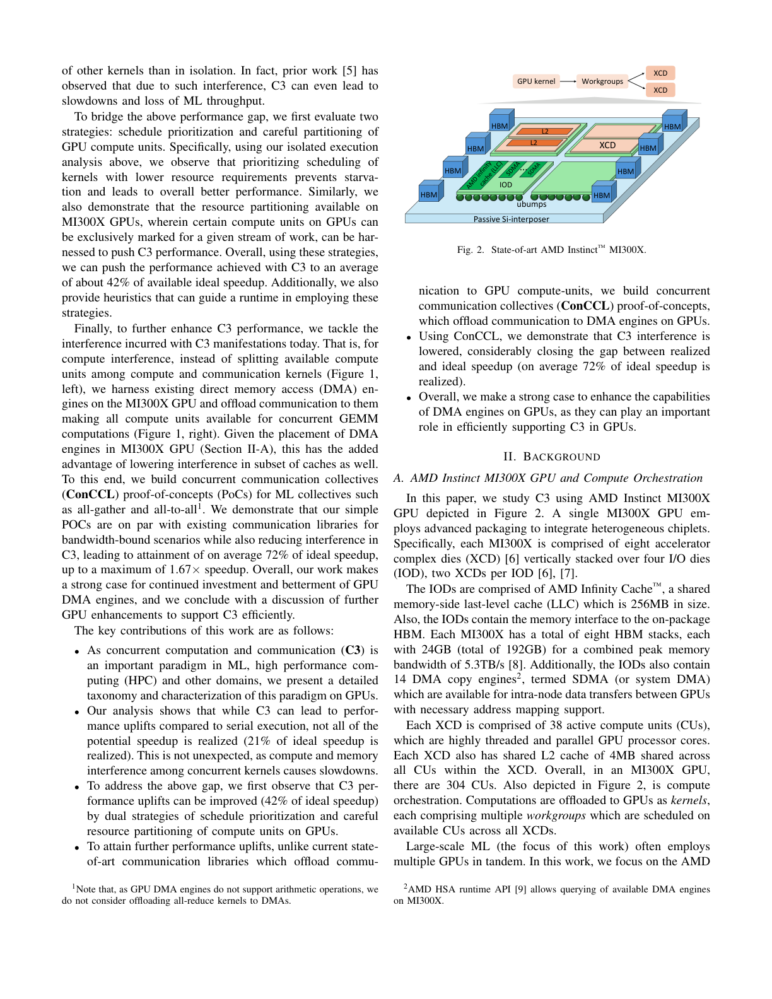
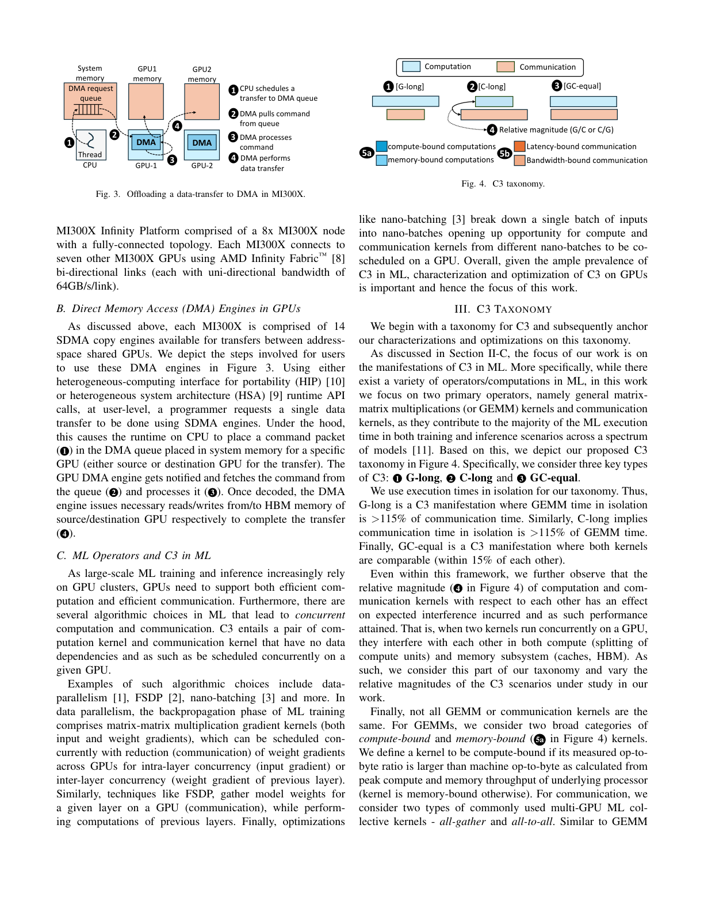
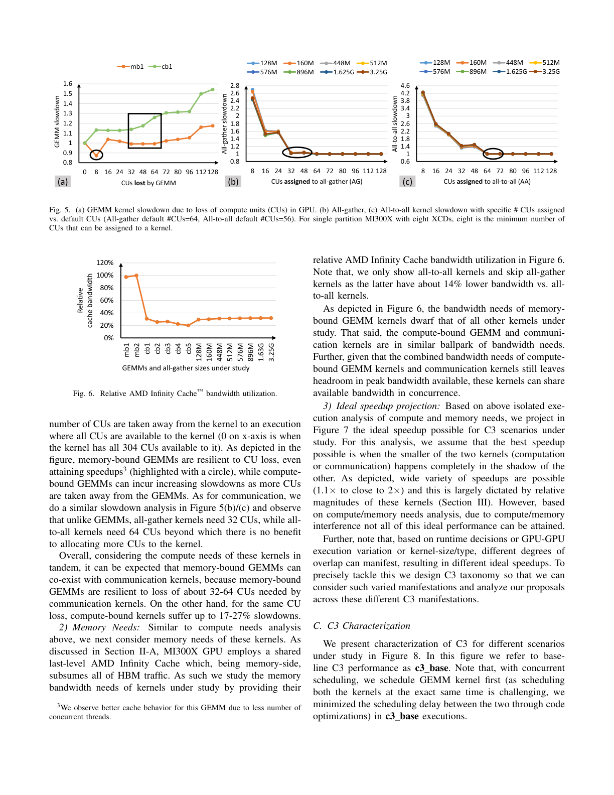
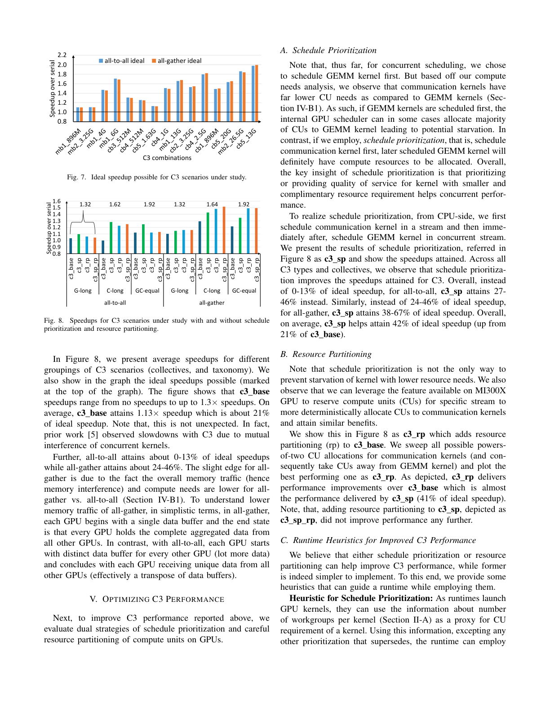
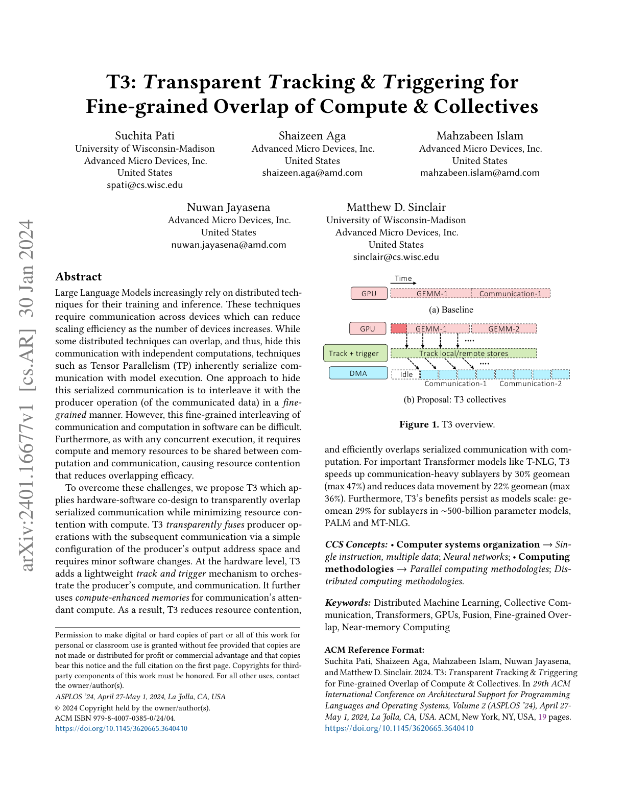
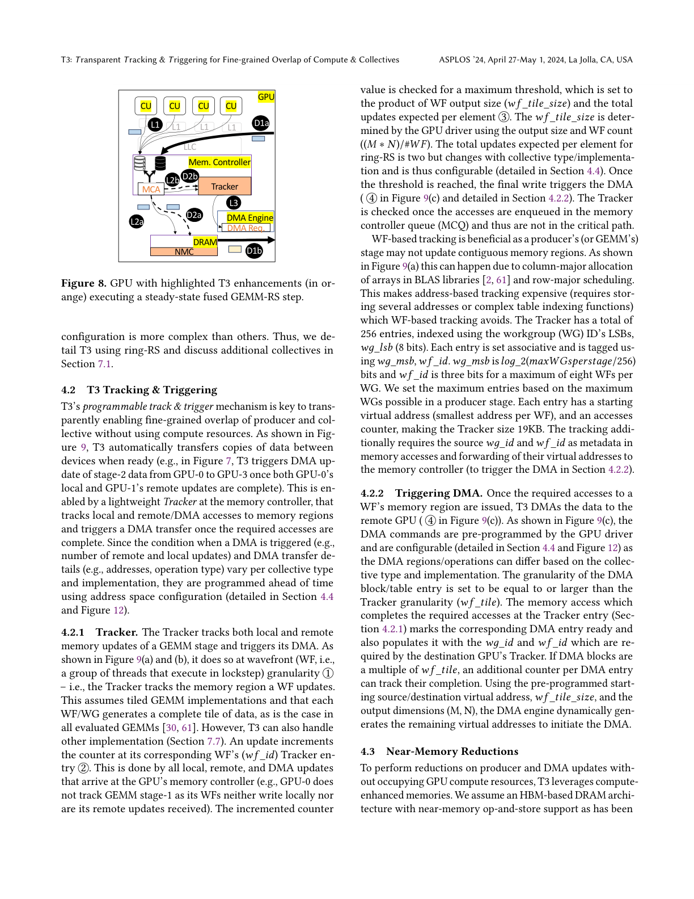

Optimizing ML Concurrent Computation and Communication with GPU DMA Engines
摘要
并发计算与通信 (C3) 是 ML 及其他领域的普遍范式，其性能优化至关重要。本文在 GPU 上对 C3 进行细致刻画（GPU 是 ML 训练和推理最广泛部署的平台）。研究发现：虽然 C3 能带来性能提升，但提升幅度远低于理想加速比（串行执行计算与通信的时间，与并发时两者最大值的比值；所有时间均来自独立执行）。具体而言，C3 平均仅达到理想加速比的 21%。这是由于并发 GPU kernel 之间在计算单元 (CU) 和内存 (HBM/缓存) 上的已知干扰问题。
为提升 C3 性能，首先评估了 调度优先级 (schedule prioritization) 和 计算单元资源分区 (resource partitioning) 两种策略，将 C3 性能提升至理想加速比的平均 42%。为进一步增强，提出将通信任务 卸载到 GPU DMA 引擎，构建并发通信集合 (ConCCL) 概念验证。结果表明 ConCCL 显著缩小了实际与理想加速比的差距，平均达到理想加速比的 72%，最高达 1.67 倍加速。本文为 GPU DMA 引擎的进一步发展提供了有力论证。
AMD MI300X 硬件架构

图 2: AMD Instinct MI300X 架构 — 8 个 XCD 堆叠于 4 个 IOD，每个 IOD 连接 2 个 HBM 堆栈
XCD (Accelerator Complex Die)
每个 MI300X 含 8 个 XCD，每个 XCD 包含 38 个活跃的 CU（高度并行化的 GPU 处理器核心），以及 4MB 共享 L2 缓存。总计 304 个 CU。
IOD (I/O Die)
4 个 IOD，每个含 64MB AMD Infinity Cache（共享末级缓存，总计 256MB）。IOD 还包含 HBM 内存接口（每 MI300X 有 8 个 HBM 堆栈，每个 24GB）和 14 个 SDMA 引擎。
AMD Infinity Fabric 互联
8-GPU 全互联拓扑，每个 MI300X 通过 AMD Infinity Fabric 双向链路连接其他 7 个 GPU，每条链路单向带宽 64GB/s。
C3 分类体系

图 4: C3 分类体系 — 三类并发模式及计算/通信的进一步细分
三种基本类型
GEMM 分类
计算密集型 (compute-bound): op-to-byte 比率高于机器峰值计算/内存吞吐比。代表来自 LLaMA-70B/405B 训练的 cb1-cb5。
内存密集型 (memory-bound): op-to-byte 比率低于机器阈值。代表 mb1, mb2。
通信分类
延迟敏感 (latency-bound): 通信规模较小时，延迟不随数据量线性增长。
带宽敏感 (bandwidth-bound): 大规模通信，延迟随数据量线性增长，受带宽限制。
本文聚焦 all-gather 和 all-to-all 两种 ML 集合通信。
为什么研究 C3？
ML 中多种算法天然产生 C3：数据并行 (反向传播中的 GEMM 与梯度归约)、FSDP (层权重 gather 与前一层计算并发)、nano-batching (不同 nano-batch 的通信与计算并发）。随着 LLM 模型规模扩大（LLaMA-70B, 405B），C3 场景越来越普遍。
基线 C3 性能刻画
计算干扰分析
当计算和通信 kernel 并发执行时，GPU 的 304 个 CU 需要被两者共享。实验通过分配不同数量的 CU 给通信 kernel，观察对 GEMM 和通信 kernel 的影响。

图 5: (a) GEMM kernel 因失去 CU 导致的减速；(b) All-gather 和 (c) All-to-all 在不同 CU 分配下的减速
GEMM 对 CU 损失的响应
内存密集型 (mb1): 对 CU 损失有韧性，甚至在失去部分 CU 时反而加速（可能因减少缓存竞争）。
计算密集型 (cb1): 随失去 CU 数量增加而显著变慢，损失 50% CU 时减速可达 1.5-1.6 倍。
通信对 CU 分配的响应
All-gather: 默认分配 64 个 CU。分配 8-16 CU 时减速约 2 倍，32+ CU 时接近默认性能。
All-to-all: 默认 56 个 CU。对 CU 数更敏感，8 CU 时减速可达 4 倍，32+ CU 时才接近默认性能。
缓存带宽利用

图 6: GEMM 和 all-gather 的相对 AMD Infinity Cache 带宽利用率
核心发现：仅实现 21% 理想加速比
理想加速比定义
理想加速比 = (串行时间: GEMM + 通信) / (并发时间: max(GEMM, 通信))。所有时间来自独立执行（非并发）测量。
理论上，如果较短的 kernel 被完全隐藏，可实现 平均 1.6 倍、最高 2 倍 的理想加速。
为什么基线性能如此差？
并发 GPU kernel 之间相互干扰，共享计算核心、缓存、HBM 带宽等资源。给定 GPU kernel 在有其他 kernel 并发时可用的资源远少于独立执行时。先前工作也观察到，由于这种干扰，C3 甚至可能导致减速和 ML 吞吐量损失。
- • 计算干扰: 并发 kernel 共享 CU，各自获得的 CU 减少
- • 缓存干扰: 多个 kernel 竞争 Infinity Cache 和 L2 缓存
- • HBM 干扰: 多个 kernel 竞争 HBM 带宽
- • 片上网络干扰: 数据在 XCD 间传输时的网络拥塞
策略优化：调度优先级与资源分区
策略一：调度优先级 (Schedule Prioritization)
优先调度资源需求较低的 kernel，防止饥饿并提升整体性能。具体而言，当通信 kernel 只需要少量 CU (10-20%) 时，优先启动通信可以让其快速完成，随后全部 CU 可用于计算。
效果: 单独使用调度优先级，结合合理启发式方法，可将整体性能从 21% 理想加速比有所提升。
策略二：CU 资源分区 (Resource Partitioning)
MI300X GPU 支持将特定 CU 专门标记给某个工作流独占使用。通过为通信 kernel 保留一部分 CU，剩余的 CU 全部用于计算 kernel，可以减少干扰。
效果: 两种策略结合使用，将 C3 性能提升至平均 42% 理想加速比。
启发式指导原则
论文提供了运行时可使用的启发式方法：
- • 根据 GEMM 类型 (cb/mb) 和通信类型决定优先级
- • 内存密集型 GEMM 可容忍更多 CU 被通信占用
- • 计算密集型 GEMM 应保留更多 CU
- • All-to-all 比 All-gather 需要更多 CU 以避免严重减速
DMA 引擎架构与工作原理
图 3: MI300X 中 DMA 卸载数据传输的四个步骤
Baseline C3 vs ConCCL 对比
图 1 展示了两种 C3 实现方式的根本区别：
通信和计算都运行在 GPU 的 CU 上。两者共享 304 个 CU，互相干扰。缓存和 HBM 也被两者竞争。
GEMM 和 Comm 共享 CU → 相互干扰
通信卸载到 DMA 引擎。全部 304 个 CU 专用于 GEMM 计算，消除了 CU 干扰。同时减少了缓存竞争，因为 DMA 引擎位置独立。
DMA 负责通信 → 304 CU 全给 GEMM
DMA 数据传输流程详解
CPU 调度传输: 通过 HIP 或 HSA 运行时 API，程序员请求使用 SDMA 引擎进行数据传输。CPU 运行时将命令包放入系统内存中的 DMA 队列。
DMA 获取命令: GPU DMA 引擎被通知后，从队列中获取命令包。
DMA 处理命令: DMA 引擎解码命令，准备数据传输。
数据传输: DMA 引擎从源 GPU HBM 读取数据，写入目标 GPU HBM，完成传输。
ConCCL: 并发通信集合实现
设计理念
ConCCL 将 ML 集合通信（all-gather, all-to-all）卸载到 GPU 的 DMA 引擎，而非传统的 GPU CU。这样所有 304 个 CU 都可以专用于 GEMM 计算，从根本上消除了计算-通信干扰。
注意：由于 GPU DMA 引擎不支持算术操作，ConCCL 不卸载 all-reduce（需要加法运算）。
All-Gather 的 ConCCL 实现
All-gather 本质上是从所有 GPU 收集数据块。ConCCL 将其分解为多个点对点 DMA 传输：
- • 每个 GPU 将数据分块发送给其他 GPU
- • 使用 14 个 SDMA 引擎并行传输
- • 通过流水线调度优化传输顺序
- • 带宽敏感场景下性能与 RCCL 相当
All-to-All 的 ConCCL 实现
All-to-all 更复杂，每个 GPU 需要向所有其他 GPU 发送不同数据：
- • 每个 GPU 按目标将数据分段
- • 使用 DMA 引擎按目标路由数据
- • 调度策略避免链路拥塞
- • 同样在带宽敏感场景与 RCCL 相当
为什么 DMA 能减少缓存干扰？
MI300X 的 14 个 SDMA 引擎位于 IOD 上，独立于 XCD 的计算单元。DMA 数据传输绕过 CU 的 L2 缓存和计算管线，仅使用 IOD 的 Infinity Cache 路径。因此，当通信卸载到 DMA 时，不仅释放了全部 CU 给 GEMM，还减少了缓存竞争。
实验结果
ConCCL vs RCCL 性能对比
ConCCL 概念验证在带宽敏感场景下与现有通信库 RCCL 性能相当，同时显著减少 C3 干扰。关键优势：
- • 304 个 CU 全部可用于 GEMM 计算
- • 减少 Infinity Cache 和 L2 缓存竞争
- • 减少 HBM 带宽竞争
- • 通信和计算真正并行，互不干扰
不同 C3 类型的改进幅度
论文对 15 种独特 C3 组合进行了测试（表 II），涵盖 G-long、C-long、GC-equal 三种类型：
- • G-long: 计算主导场景，ConCCL 改善最显著（计算不再被通信干扰）
- • C-long: 通信主导场景，DMA 卸载使通信更高效
- • GC-equal: 两者均衡，改进适中
核心洞察
1. 基线 C3 性能远低于理想
C3 在 GPU 上平均仅实现 21% 的理想加速比，原因是并发 kernel 在 CU、缓存和 HBM 上的严重干扰。这证明了优化的必要性。
2. 调度优先级 + 资源分区有效提升
两种策略结合可将性能提升至 42% 理想加速比。优先调度低资源需求 kernel 和 CU 分区是实用且有效的优化手段。
3. DMA 卸载是最有效的方案
ConCCL 将通信卸载到 DMA 引擎，从根本上消除计算-通信干扰，达到 72% 理想加速比，最高 1.67 倍加速。这为 GPU DMA 引擎的未来发展指明了方向。
4. DMA 引擎潜力待挖掘
当前 SDMA 引擎功能有限（不支持算术操作）。未来增强（如支持归约操作）将使 DMA 能够处理 all-reduce 等更多集合通信，进一步提升 C3 性能。
研究的 GEMM 与 C3 组合
GEMM Kernel 列表
| Tag | 尺寸 | 来源 | 类型 |
|---|---|---|---|
| cb1 | 8192x8192x8192 | LLaMA-70B | 计算密集型 |
| cb2 | 16384x8192x16384 | LLaMA-405B | 计算密集型 |
| cb3 | 16384x16384x8192 | LLaMA-405B | 计算密集型 |
| cb4 | 18432x8192x16384 | LLaMA-405B | 计算密集型 |
| cb5 | 106496x8192x16384 | LLaMA-405B | 计算密集型 |
| mb1 | 8192x57344x8192 | LLaMA-70B | 内存密集型 |
| mb2 | 16384x106496x8192 | LLaMA-405B | 内存密集型 |
C3 vs T3 方案深度对比

T3: Transparent Tracking & Triggering for Fine-grained Overlap of Compute & Collectives (ASPLOS '24)

图 8: T3 GPU 架构增强 — Tracker、NMC、MCA 模块 (橙色高亮)
论文基本信息对比
| 维度 | C3 (arXiv:2412.14335) | T3 (ASPLOS '24) |
|---|---|---|
| 作者 | Anirudha Agrawal 等 (AMD) | Suchita Pati 等 (UW-Madison + AMD) |
| 发表 | arXiv 2024 (预印本) | ASPLOS '24 (顶会) |
| 核心问题 | C3 仅实现 21% 理想加速比 | TP 中 AR 在关键路径上，序列化通信 |
| 解决方案 | DMA 引擎卸载通信 (ConCCL) | 软硬件协同 + Track & Trigger + NMC |
| 实验平台 | 真实硬件 MI300X | GEM5-gpu 模拟器 (验证于 MI210) |
| 加速效果 | 72% 理想加速比, 最高 1.67x | 加速 30% (最大 47%), 训练 12%, 推理 15% |
核心技术方案对比
| 技术维度 | C3 / ConCCL | T3 |
|---|---|---|
| 通信执行位置 | GPU DMA 引擎 (SDMA) | 融合到 GEMM kernel 内 (remote/dma_update) |
| CU 占用 | 0 CU (DMA 独立) | ~0 CU (Tracker 硬件) |
| 进度跟踪 | DMA 队列调度 | Tracker 硬件 (WF 粒度计数器) |
| 归约操作 | 不支持 (DMA 无 ALU) | 支持 (NMC 近内存计算) |
| 支持通信类型 | All-gather, All-to-all | Reduce-scatter (核心), 可扩展 |
| GEMM 修改 | 无需修改 | 仅需地址空间配置 (t3_malloc) |
| 硬件改动 | 无 (利用现有 DMA) | 需要 Tracker + NMC + MCA |
| 内存控制器仲裁 | 标准 DMA 队列 | 动态 MCA (计算优先 + 队列阈值) |
实现细节对比
- • 使用现有 14 个 SDMA 引擎，无需硬件改动
- • 通信分解为点对点 DMA 传输，流水线调度
- • 通过 HIP/HSA API 请求 DMA 传输
- • 不支持 all-reduce (DMA 无算术能力)
- • 在 MI300X 真实硬件上验证 (304 CU, 5.3TB/s)
- • 测试 15 种 C3 组合 (LLaMA-70B/405B + 合成)
- • 新增 Tracker 硬件 (内存控制器处，WF 粒度计数)
- • GEMM 输出直接 remote_update 到目标 GPU
- • 地址空间配置 (t3_malloc, remote_map, dma_map)
- • NMC 支持归约操作 (HBM 内 ALU)
- • 模拟器验证 (80 CU MI210 配置), 硬件趋势一致 (6% 误差)
- • 测试 Mega-GPT-2, T-NLG, PALM, MT-NLG 等
根本区别分析
1. 硬件改动需求
C3: 零硬件改动。完全利用 MI300X 现有的 14 个 SDMA 引擎，是纯软件方案。这是 C3 的最大优势——可以在现有 GPU 上立即部署。
T3: 需要三项硬件增强：(1) Tracker 模块 (计数器+阈值比较)；(2) NMC (近内存 ALU 用于归约)；(3) MCA (动态仲裁器)。这些需要下一代 GPU 架构支持。
2. 对 All-Reduce 的支持
C3: 明确不支持 all-reduce，因为 SDMA 引擎只做数据搬移，无算术能力。这限制了 C3 在张量并行 (TP) 中的应用，因为 TP 的关键路径上正是 all-reduce。
T3: 核心贡献就是支持 reduce-scatter (all-reduce 的一半)。通过 NMC 在 HBM 内直接执行归约，无需 CU 参与。这是 T3 相对于 C3 的关键技术优势。
3. 通信与计算的融合粒度
C3: 通信在 kernel 级别与计算并发。DMA 引擎独立执行通信，与 GEMM kernel 并行。粒度是 kernel 级别的。
T3: 通信融合到 GEMM 的 wavefront 级别。每个 WF 完成数据生成后，Tracker 自动触发 DMA。粒度更细 (WF 级)，重叠更充分。
4. 内存访问模式
C3: GEMM 正常写入 HBM，DMA 从 HBM 读取并传输到远程。存在额外的 HBM 读/写。
T3: GEMM 输出可直接 remote_update 到目标 GPU 地址，减少一次本地 HBM 写。NMC 减少一次 CU 读。整体数据移动减少 22% (geomean)。
5. 透明度
C3: 需要显式调用 ConCCL API 替代 RCCL。对应用是可见的改变。
T3: 通过 t3_malloc 和地址配置实现，GEMM kernel 本身无需修改。对 GEMM 实现透明。
性能指标对比
- • 基线 C3 仅 21% 理想加速比
- • 策略优化 (调度+分区) → 42%
- • ConCCL (DMA) → 72% 理想加速比
- • 最高 1.67 倍加速 (vs 串行)
- • 带宽敏感场景 ≈ RCCL 性能
- • 测试 15 种 C3 组合
- • 加速 Transformer 子层 30% (最大 47%)
- • 减少数据移动 22% (最大 36%)
- • 训练加速 12%，推理加速 15%
- • ~500B 参数模型加速 29%
- • 模拟验证 (6% 误差于硬件)
- • 测试 Mega-GPT-2, T-NLG, PALM, MT-NLG
C3 优势
- • 零硬件改动 — 可立即在现有 MI300X 上部署
- • 真实硬件验证 — 不是模拟结果
- • 全面的 C3 分类体系 — 系统性刻画
- • 策略优化指导 — 提供运行时启发式方法
- • 带宽敏感场景媲美 RCCL
C3 局限
- • 不支持 all-reduce — TP 关键路径无法优化
- • Kernel 级粒度 — 不如 WF 级精细
- • DMA 队列管理开销 — CPU 参与
T3 优势
- • 支持 all-reduce/reduce-scatter — 覆盖 TP 核心场景
- • WF 级细粒度重叠 — 重叠更充分
- • 数据移动减少 22% — NMC + remote_update
- • GEMM 完全透明 — 仅需地址配置
- • 顶会发表 — ASPLOS '24 同行评审
T3 局限
- • 需要硬件改动 — Tracker + NMC + MCA
- • 仅模拟器验证 — 尚未在真实 GPU 上运行
- • NMC 需要 HBM 厂商支持 — 短期内不可用
重要洞察：共同作者与互补关系
注意两篇论文有共同作者：Shaizeen Aga, Suchita Pati, Mahzabeen Islam 同时出现在 C3 和 T3 中。这表明两个方案并非竞争关系，而是 AMD 在 C3 优化方向上的互补探索。
一个可能的未来方向是结合两者：在现有 GPU 上用 ConCCL 处理 all-gather/all-to-all (C3)，在未来的 GPU 上用 T3 处理 reduce-scatter/all-reduce。两者可以协同工作，为不同通信类型选择最优卸载策略。